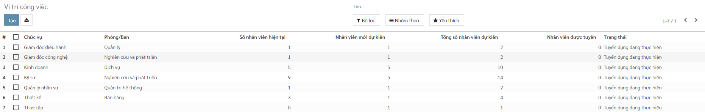
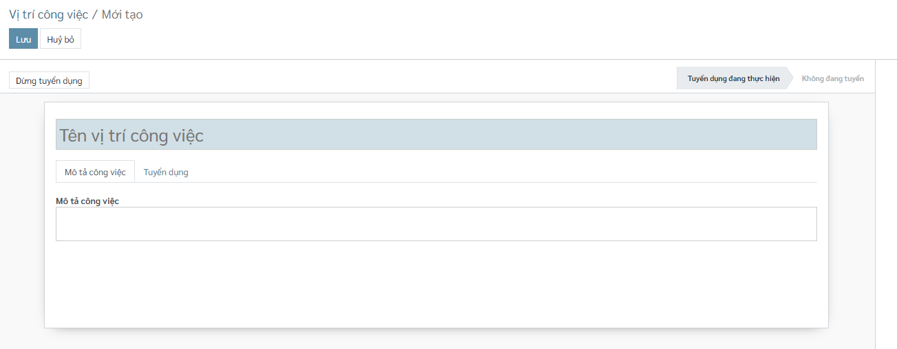
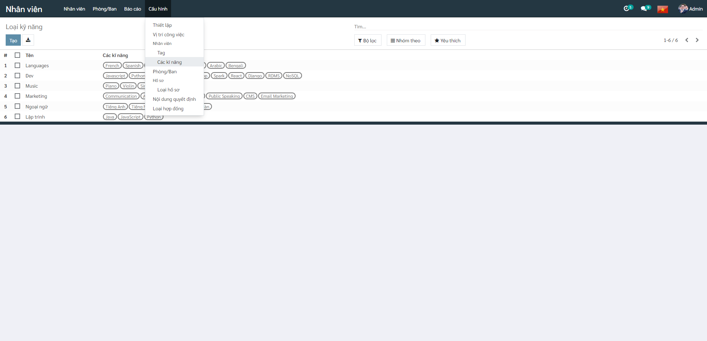
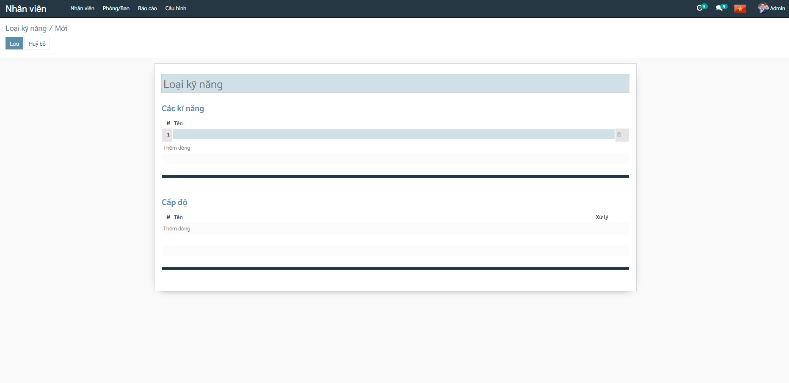
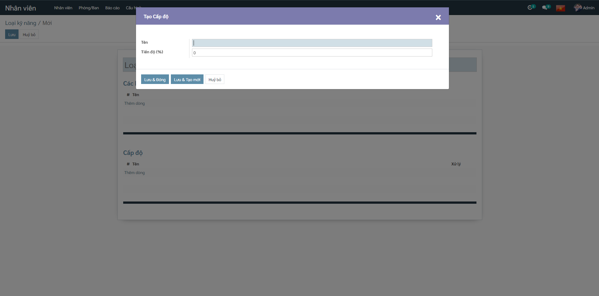

Vị trí công việc
Chức năng này cho phép người dùng khai báo vị trí công việc sử dụng trên hệ thống.
Các bước thực hiện
Bước 1: Vào phân hệ Cấu hình, chọn Vị trí công việc, nhấn Tạo

Bước 2: Khai báo các thông tin chi tiết của Vị trí công việc

- Tên vị trí công việc: Nhập tên vị trí công việc
- Mô tả công việc: Nhập mô tả vị trí công việc
- Phòng Ban: Tạo phòng ban mới (Hoặc chọn phòng ban có sẵn dưới combobox)
- Nhân viên mới dự kiến: nhập số lượng nhân viên dự kiến cho vị trí công việc
Kinh nghiệm & Kỹ năng
Chức năng này cho phép người sử dụng khai báo Kỹ năng, Loại kỹ năng được sử dụng trong phân hệ Nhân viên của hệ thống.
Các bước thực hiện
Bước 1: Vào phân hệ Cấu hình, chọn Các kỹ năng, nhấn Tạo

Bước 2: Khai báo các thông tin chi tiết của Loại kỹ năng

Tại mục Cấp độ, nhập cấp độ của kỹ năng (Theo phần trăm, hoặc theo thang điểm)
